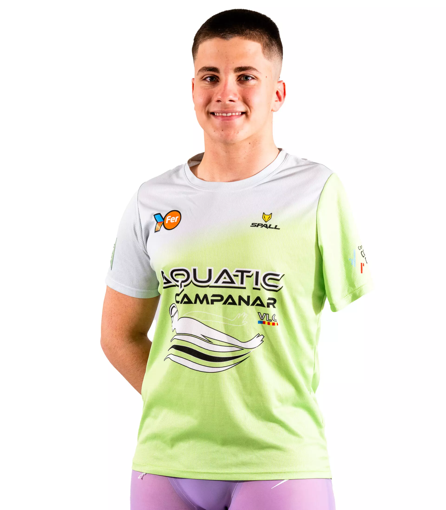

Carlos Toledo Martinez
"Tole"
Especialidad: Natación adaptada - espalda y braza
Edad: 17 años
Club: CD Aquatic Campanar
Biografía
Carlos un nadador paralímpico español, destacado por su esfuerzo, constancia y superación en el deporte adaptado. nacido el 8 de noviembre de 2007 en Valencia. Compite en la categoría S8 y forma parte del equipo del Club Deportivo Aquatic Campanar, además de estar integrado en el Proyecto FER, una iniciativa de la Fundación Trinidad Alfonso que apoya a deportistas de la Comunidad Valenciana
Logros Deportivos
- Ha representado a España en múltiples competiciones nacionales e internacionales
- 🥇X3 IWAS World Games 2022
- 🥇 50m mariposa S8 en el Campeonato de España AXA para jóvenes promesas